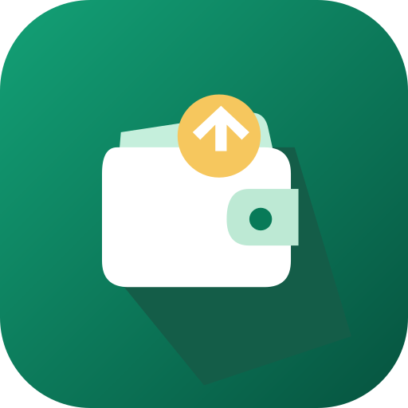

DuleManager Express
A personal finance companion for students, employees, freelancers and households. Choose a Home layout that fits your life. Record daily costs and received income, track expected payments and projects, set flexible spending limits, plan bills and build savings goals. Export monthly Excel reports or detailed weekly and period CSV records.
Start locally as a guest or choose Google sign-in for account-linked features. Optional cloud synchronization and live shared spaces use Firebase. Groups support equal/custom/percentage splits, recurring bill plans, repayment confirmations and disputes, and period archives with CSV reports. The default currency is LKR; other currencies use separate ledgers.
When the publisher activates the sender service, verified Google users can opt in to receive the previous month's Excel report by email at the start of each month. Reports use cloud-synchronized records and can be stopped in Settings. Monthly emails are off by default.
Optional Google banners can be enabled in Settings after adult confirmation and applicable privacy checks. The release is configured for AdMob banners, subject to Google approval, ad availability and privacy checks; development builds use test ads. Private financial records are not supplied for ad targeting.
Plan today and tomorrow with on-device spending guidance. Prepare next month’s allowance during the last five days, confirm money when it arrives, and optionally allocate unspent budget to a monthly savings pot or carry it forward. These are bookkeeping plans, not bank transfers.
Personalize Home cards, hide Home money amounts, use custom categories and tags, and review your week. New account types share the same private ledger; switching type keeps existing history. Advanced planning tools use local calculations, with optional account synchronization.
Developed by W D Hansaja. For help with the app, privacy or deletion requests, contact dulemexpresshq@gmail.com.